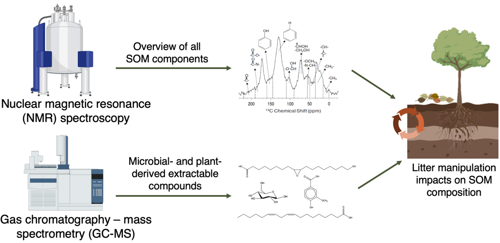

Monday, May 8th (AM)
Chemoproteomics identification of human liver fatty acid binding protein as a protein target of triphenyl phosphate
Jolie Miller and Hui Peng
Triphenyl phosphate (TPHP) is a widely used flame retardant and plastic additive, part of the class of organophosphate esters (OPEs). There is evidence that OPEs exhibit neurotoxicity through antagonistic covalent binding to a serine residue within acetylcholinesterase, and that this is not their only covalent interaction within the proteome. TPHP has known toxic effects on endocrine, lipogenic, and immune systems, many without clear molecular initiating events. In this project, we use mass-spectrometry based chemical proteomics and activity-based protein profiling (ABPP) to identify protein targets of TPHP within the hepatic proteome. ABPP is a chemical labeling strategy where proteins are exposed to a chemically analogous probe (in this case, TPHP with an alkyne moiety), which is then reacted with a biotin or fluorescent tag to mark where binding occurs.
We have utilized biotin affinity purification to isolate significant hepatic protein targets of TPHP using high-resolution LC/MS, which lead to the identification of human liver fatty acid binding protein (hL-FABP) as a major target for covalent modification by TPHP. We then evaluated the binding affinity of TPHP and other OPE compounds to hL-FABP by using a fluorescence ANS displacement assay. This assay demonstrated TPHP as a selective binder to hL-FABP and highlighted how structural differences in OPE moieties can change binding affinity to hL-FABP. Currently, we are working to identify sites of TPHP covalent modification on hL-FABP using both shotgun and top-down proteomics. This research identifies a novel protein target of TPHP and paves the way toward identifying molecular initiating events for OPE toxicity.
Development of a simplified oxygenated system for in vivo solution state NMR
Peter Costa and Andre Simpson
The use of flow systems is critical for sustaining aquatic organisms for environmental toxicology and allowing for in vivo solution-state NMR studies in their native and unaltered state. Current approaches use flow lines that have the potential to burst and clog, require large volumes of media, and multiple expensive HPLC pumps. The “bubble pump” described here provides several unique advantages such as no clogging, small and constant solution volume, and no need for pumps or fluid lines in and out of the spectrometer. The system’s design involves two core components: a dual slit adapter and an oxygen generator. The addition of oxygen gas forms bubbles which rise and leave an area of reduced pressure that pulls in water from above the double slit and down into the chamber that contains the Daphnia. The result is a constant flow of oxygenated water over the organism, operating solely from one oxygen line. To evaluate the efficacy of the system, lactic acid, a metabolite that is strongly associated with anoxic stress in D. magna, is observed in the presence and absence of oxygen by time-resolved monitoring using 1H NMR. Without oxygen, there is a large build-up of lactic acid after 10 hours. However, with a continuous supply of oxygen, there is no lactic acid even after 22 hours of exposure. The oxygenated flow system is designed for in vivo solution-state NMR, for both large and smaller diameter probes with potential applications in toxicity and metabolomics-based research.

(Left) Schematic of an oxygenated system in a 10 mm NMR tube with D. magna. The black arrow indicates the active flow of current from movement of oxygen bubbles. (Right) 1H NMR spectra of D. magna (n = 40) in the presence and absence of oxygen exposure. Lactic acid is observed (grey box) in absence of oxygen exposure.
Soil organic matter biogeochemical trajectories are altered uniquely with 66 years of litter manipulation in forests
Isla Wrightson and Myrna Simpson
Global forest productivity has been altered greatly through climate and anthropogenic changes. Although extreme drought and temperature have lowered forest productivity in some regions, increased productivity has been observed in many forests over the last few decades due to increases in atmospheric CO2, temperature, nutrient deposition, and lengthened growing seasons. Shifts in the composition and storage of soil organic matter (SOM) are also mainly attributed to the perturbations in the quality and quantity of plant inputs to the soil that accompany these changes in productivity. Furthermore, soil carbon (C) is not linearly related to detrital inputs as increased inputs do not always increase soil C storage. Elevated plant inputs can induce soil respiration and the activation of microbes, destabilizing the stored SOM and therefore decreasing soil C storage in a process referred to as soil priming. This is in contrary to assumptions made by early soil C models, thus making predictions about future trends in soil C sequestration in response to global change drivers difficult. To study the long-term compositional changes to SOM in response to detrital changes, soil samples were collected from the University of Wisconsin (UW) Arboretum after 66 years of experimental treatments. The samples will be characterized using targeted SOM compound analyses and nuclear magnetic resonance (NMR) spectroscopy. These complementary methods are able to discern changes in SOM composition and degradation state and collectively, the results from this project will provide unprecedented insight to biogeochemical processes occurring at the molecular-level at the UW Arboretum.

Aqueous nitration of phenols with dissolved nitrite: a formation mechanism of atmospheric brown carbon
Yutong Wang and Jonathon Abbatt
Light-absorbing organic compounds found in atmospheric particles are commonly referred to as brown carbon (BrC), with nitrophenols being a major contributor. The production of nitrophenols typically occurs via direct emissions or through photochemical reactions involving phenols and radicals like OH, NO2, and NO3. In this study, a dark pathway for nitrophenol production is explored, which involves aqueous HONO/NO2- and proceeds without apparent formation of OH radicals. The reaction kinetics of a model aqueous system comprising of catechol and NO2- are characterized using high-performance liquid chromatography-mass spectrometry (HPLC-MS) and UV-Visible spectrometry. The rate of reaction is observed to increase from pH 4.4 to pH 3.4, along with a darkening of the solution. Nitrocatechol, the first-generation nitration product of catechol, is shown to undergo later-generation reactions, producing additional chromophores with an absorption mode in the visible region (425 nm). The generality of this reaction is demonstrated using aqueous wood/peat smoke extracts through aerosol mass spectrometry (AMS) and UV-visible spectrometry, with both extracts exhibiting an increasing N:C ratio and enhanced mass absorption coefficient (300 to 500 nm) upon aqueous nitrite addition. The study also investigates the effect of droplet evaporation, a physical aging process that aerosols and cloud droplets go through, on this nitration mechanism, and the conditions under which this pathway for BrC formation is more prevalent.
A demonstration of BrC aerosol darkening caused by the reaction with dissolved HONO.
An analysis of nitrate reactivity with volatile organic compounds across Canada
Brendan O’Connell and Jennifer Murphy
The nitrate radical (NO3) is a strong oxidant, which can react with a wide array of Volatile Organic Compounds (VOCs), particularly unsaturated compounds, leading to a permanent loss of odd oxygen. Alternatively, NO3 can react with NO2 to form N2O5, which may be taken up on aerosol to form particle nitrate. However, NO3 can also react with NO or photolyze to reform NO2, thus recycling nitrogen oxides. This work focuses on calculating the pseudo first order loss rate of NO3 with VOCs to determine which reaction pathway dominates in the urban atmosphere. The nitrate reactivity is calculated by summing the products of the concentration of each VOC with its rate constant against NO3. The data used in this study is from the National Air Pollution Surveillance (NAPS) program which monitors VOC concentrations using 24-hour integrated observations collected every six days at monitoring sites across Canada between 1995 and 2020. Analysis found that the overall reactivity of NO3 with VOCs has declined with time due to decreasing concentrations of reactive VOCs in urban settings. Two key VOCs, naphthalene and 2-methyl-2-butene, have historically dominated reactivity with NO3 but their dominance is declining due to decreasing concentrations. α-Pinene and D-Limonene are the next most reactive VOCs, and are becoming more important with time in terms of total NO3 reactivity. While the absolute reactivity of VOC towards NO3 has decreased, its importance as a sink has likely increased in relative terms due to simultaneous decreases in NOx.
Major nitrate radical reactions in the troposhere. Compounds in bold represent the loss of off oxygen (Ox).
2D 1H-13C experiments for targeted analysis of structural sub-classes in-vivo
William Wolff and Andre Simpson
In-vivo NMR is a powerful tool for tracking the biochemical responses of organisms in response to environmental stress but has been limited by poor resolution as a result of the extreme inhomogeneity of living organisms, and in the chemical complexity of an organism. Targeted pulse programs can support environmental studies, but often discard information that might be useful in understanding the mode of action of environmental stressors. To address these challenges, we introduce two new targeted pulse sequences: an in phase anti-phase (IPAP) HSQC to separate amides and acids alongside a conventional HSQC, and a 2D HCCH-TOCSY to obtain additional correlations whilst maintaining high resolution in a narrow band.

Carbonyl edited constant time HSQC applied to ex-vivo uniformly 13C-labelled D. magna processed to produce the sum (a) and difference (b) from the IPAP acquisition scheme. (a): the “remaining” signals not selected by the scheme (b): amino acid and organic acid signals. The green box in (b) highlights the α-amino acid region. Assignments generated from Bruker Bio-reference databases 2-0-0 through 2-0-5.
Evaluating land-atmosphere fluxes of nitrogen species in the Canadian Earth System Model
Gavin McCurdy and Jennifer Murphy
My research is focused on evaluating the representation of land-atmosphere nitrogen fluxes in the Canadian Earth System Model (CanESM), specifically working with the Canadian Land Surface Scheme Including Biogeochemical Cycles (CLASSIC) model, which is the terrestrial component of CanESM. A nitrogen cycle was recently added to the carbon cycle framework in the CLASSIC model. The main objective is to assess whether the emissions of N2O, NO, and NH3 produced by CLASSIC can be used as inputs to the atmospheric model when the two modules are fully coupled. These gases play important roles in ozone depletion, oxidative capacity and climate forcing within the atmosphere, but their emissions are typically prescribed in atmospheric models. I am running a single-site version of CLASSIC at a few locations with Fluxnet (meteorological) data to compare the relative importance of internal and land-atmosphere fluxes of N. In a 15-year simulation at the University of Michigan Biological Station, annual emissions of N2O (0.52 kg N ha-1 a-1), NO (0.55 kg N ha-1 a-1), and NH3 (0.89 kg N ha-1 a-1) accounted for only a small fraction of the total conversion of soil NH4+ and NO3-. The emissions of NO during the month of July (3.2 g N ha-1 d-1) are larger than observations at the site (between 0.6-1.2 g N ha-1 d-1). All three species’ emissions remain relatively low and constant from September through April, increase sharply in May, and remain high during the summer months (June-August).

Simplified diagram of the nitrogen cycle implemented in CLASSIC
The Influence of polar bears’ catabolic state and dietary composition on the potential biomagnification of PCBs
Yuhao Chen and Frank Wania
Passive equilibrium sampling (PES) is a powerful tool to noninvasively derive the thermodynamic limit to an animal’s gastrointestinal biomagnification capability (BMFlim) by determining the ratio of the products of the volume (V) and fugacity capacity (Z) of undigested and digested food. By utilizing PES, we have identified a high-fat diet and a high digestion efficiency as the two primary contributors to a high BMFlim. This led us to hypothesize that an organism’s catabolic state can influence its BMFlim. Cooperating with the Toronto Zoo, we were able to study how an individual polar bear’s BMFlim responds to seasonal changes in dietary composition and catabolic state (the bears fast from December to June and feast from July to November). Juno, the youngest bear, served as a reference since her diet varied only little sasonally. Juno’s BMFlim reached a peak of ~60 in March and dropped to ~37 in July and November, mainly due to a decrease in the daily dietary ingestion rate (Gfood). The BMFlim of Aurora and Nikita also peaked in March, at 244 and 60, respectively, but decreased to a minimum of 39 and 12, respectively, in July before rising again to 61 and 50, respectively in November. Dramatic reductions in BMFlim were due to a decrease in Gfood and the dietary lipid content (causing Zfood to decrease), while the increase in BMFlim toward the end of the fasting period was caused by a higher digestion efficiency.
Exploring proton-only NMR experiments and filters for Daphnia in vivo: potential and limitations
Kiera Ronda and Andre Simpson
With increasing industrialization, the environmental impacts of anthropogenic activities has become an area of growing concern. Therefore, it is essential to understand the impacts of contaminants on environmental health. NMR metabolomics has shown great potential in this area, due to its non-targeted nature and ability to analyze complex samples in their unaltered states. Daphnia magna are one of the key species used for these studies as they are small enough to survive inside a 5 mm NMR tube.
Due to the complexity of biological samples, 1D proton spectra have a high-degree of overlap, with extensive information buried beneath broad lipid signals. Spectral dispersion is greatly improved in 2D experiments, therefore most studies to date have used 1H-13C 2D NMR of 13C-enriched organisms. With the soaring costs of 13C-enrichment (~600%) making culturing enriched organisms much less accessible, it is important to ask, “can any meaningful information be extracted from the proton-only NMR of living Daphnia”?
To address this, two samples are evaluated. The first consist of intact lyophilized Daphnia reswollen in D2O, as the organisms produce sharper signals after death. Conversely, in vivo, organisms swim inside a flow system of 100% water, resulting in lipid dominated spectra. As seen in Figure 1, a wealth of information is present in the reswollen organisms and solvent suppression is trivial, whereas aggressive suppression is required for the in vivo sample. The costs and benefits of various proton-only experiments will be investigated to determine the extent of information that can be obtained without organism enrichment.

Investigating the application of no water suppression (a, d), a presaturation pulse (b, e), and a SPR-W5-WATERGATE (c, f) in an ex vivo (left) and in vivo (right) sample of D. magna.
Impacts of SVOCs and relative humidity on the deposition rate of ozone to permeable indoor surfaces
Jillian Downey and Jonathan Abbatt
Ozone (O3) reacts with unsaturated compounds, whose reaction products, when inhaled, can result in negative health effects. For many unsaturated molecules, the surface reactivity is over 100 times that in the gas phase. Given that indoor environments have high surface area-to-volume ratios, surface reactions play a huge role in establishing indoor air quality. O3 loss rates on single-component, clean surfaces have been well studied. However, the indoor environment is complex, with many surfaces being permeable and/or covered in semivolatile organic carbons (SVOCs). Diffusion rates of O3 into permeable surfaces depend on RH, and the partitioning of SVOCs may also be affected by RH. This suggests that RH will affect O3 reactivity, however, an understanding of these processes is limited. This work addresses how O3 deposition on a permeable surface (painted surface) is affected by a model unsaturated SVOC (terpineol) at different RHs. Firstly, to quantify O3 deposition on a painted surface, O3 was passed through a chamber (with painted surfaces on the top and bottom) and O3 was monitored at varying RHs. Then, terpineol uptake on a painted surface was quantified by measuring the sorbed mass of terpineol using an online mass spectrometer at different RHs. Lastly, O3-terpineol reactivity was studied, where O3 was introduced to a terpineol-conditioned chamber and was monitored at varying RHs. It was found that increased RH increases O3 deposition and terpineol partitioning into the paint. Also, the presence of terpineol increases ozone deposition, emphasizing the importance of SVOC-O3 surface reactions on indoor air quality.